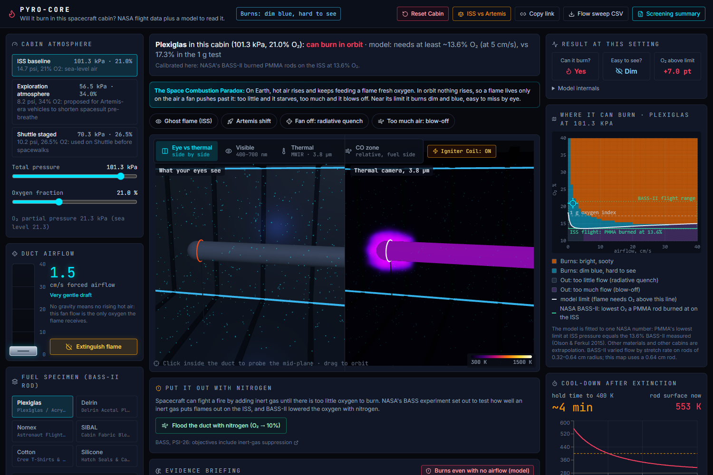
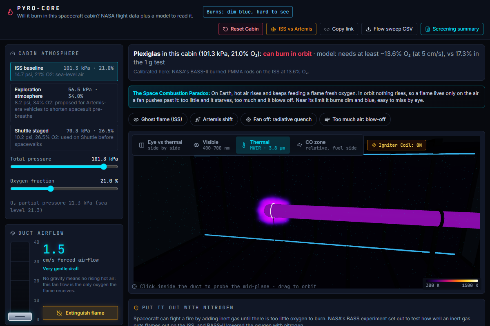

Will this material catch fire in a spacecraft?
Challenge: Flame in Freefall: SI-Powered Fire Safety Insights from Microgravity Combustion Data
Team: Sasi Kiran Gottipati (solo team)
Live app: sasikiran1.github.io/pyro-core
Code: github.com/sasikiran1/pyro-core

Near its limit, a flame in orbit burns dim and blue: easy to miss by eye.
The same burning rod, side by side. In Space Station air at a gentle 1.5 cm/s breeze, the flame is faint to the eye but clear at 3.8 µm infrared.
One-click scenarios show the rest: fan off (it starves), too much air (it blows out), and the Artemis shift.

The evidence briefing ranks the closest NASA flight findings for your settings. An optional Google Gemini summary may only repeat those facts: any new number is rejected.
| Material | Lowest O₂ to burn: ISS (21%) | Artemis (34%, 56.5 kPa) | ||
|---|---|---|---|---|
| Acrylic (PMMA) | 13.6% NASA-matched | can burn | 15.9% | can burn |
| Cotton | 14.1% | can burn | 16.6% | can burn |
| Nomex (flight-suit fabric) | 22.2% | cannot burn | 27.6% | can burn |
| Silicone (estimated values) | 21.8% | cannot burn | 27.1% | can burn |
Model results. Only acrylic in ISS air is matched to flight data; Artemis results are beyond NASA's measurements, and the app says so on screen. Not a safety certification.
Try it: sasikiran1.github.io/pyro-core · Code (MIT): github.com/sasikiran1/pyro-core
NASA data: BASS-II (PSI-25, doi:10.60555/4qc4-de67), BASS (PSI-26, doi:10.60555/58h4-dy80), NTRS 20150008961. Not a NASA product.